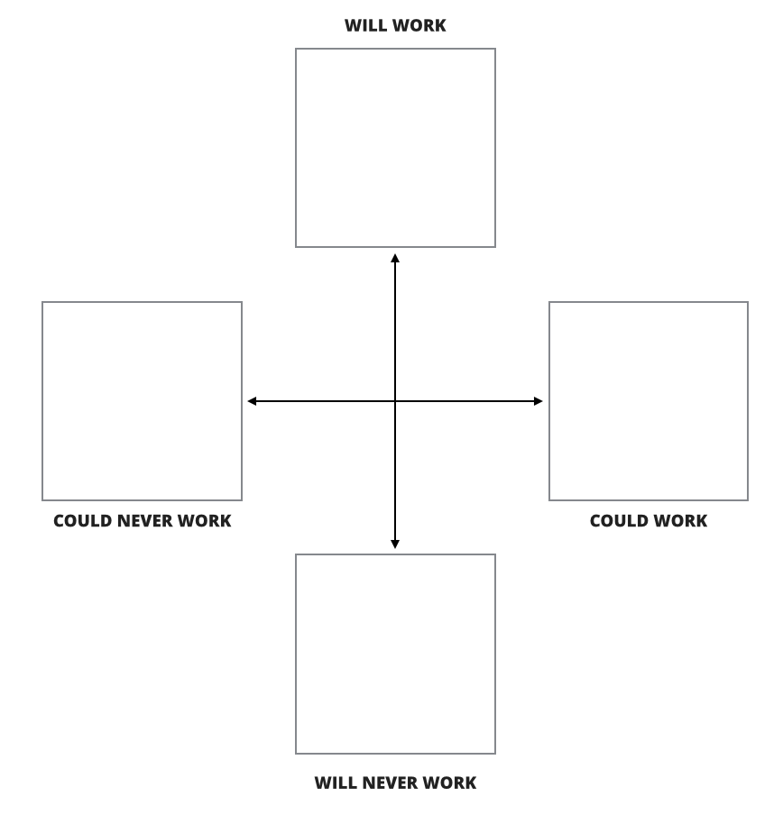
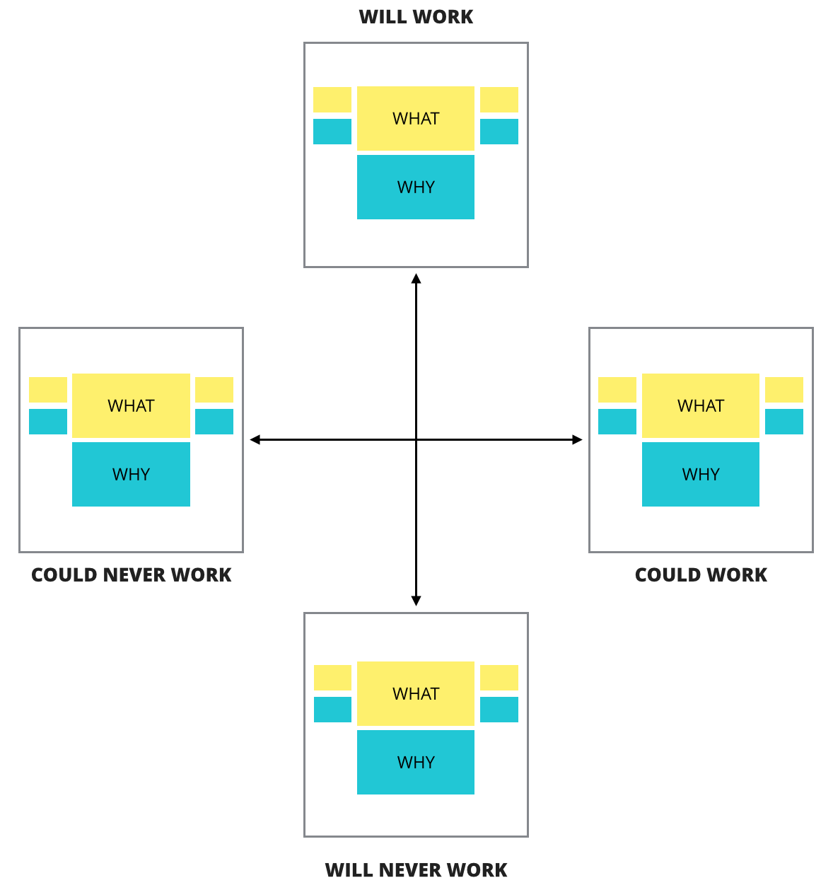
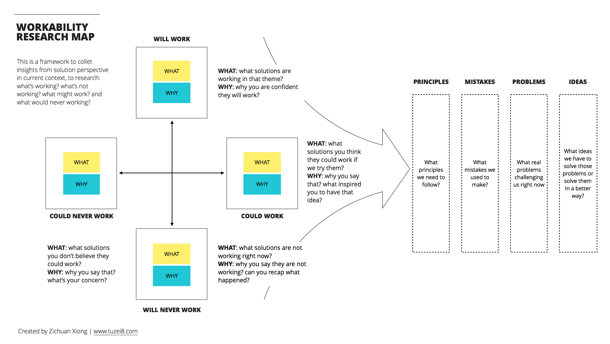

逃避东海岸可怕的暴风雪，来到三番才知道为什么加州为何是一片天堂般的土地。受到同学课程中关于可工作性（Workability）知识的启发，我尝试产生了一个新的基于对现有解决方案研究的框架，同时也祝同学双节快乐，你总是给我很多启发，虽然有时你并不知道。
对现有解决方案的忽视
昨天我面试了一位Researcher，我们做了一个模拟的whiteboarding练习，我们希望她用很短的时间对我们提出的主题进行一次有结构性的访谈，这样的练习帮我们了解她作为用户研究者对于上下文的吸收能力。
我们的主题是Standup（站会），她问到：现在的站会都有什么问题？我说：大家会迟到。她接着问：为什么会迟到呢？我说：站会都在早上，大家不能准时到达。她记录下来，就开始进入下一个问题的讨论了。
其实我更期待的对话是：“你们现在是如何解决这个问题的”、“迟到的人都会给大家买零食。”、“这个方法有效果吗？”、“刚开始还行，后来慢慢大家也都懒了”、“那后来呢？”、“后来大家把时间推迟了30分钟，给大家一个缓冲”、“这个方法好不好呢？”、“也有不好，因为工作时间就少了半小时。”...
这就是我们在进行用户研究时容易犯的错误，我们往往忽视了对现有解决方案的研究，而这里说的解决方案指的是：
- 现在正在用的方案；
- 曾经用、现在却不用的方案；
- 曾经尝试很快失败的方案；
- 一直想尝试又没机会尝试的方案；
而有趣的是，这里每一条的背后，都是非常有价值的上下文：
- 通过研究现在在用的方案，让我们了解什么是真实的问题以及用户能够接受的方式；
- 通过研究曾经用、现在却不用的方案，让我们了解问题的改变或者随着上下文变化，用户的可接受行为的变化；
- 通过对失败方案的研究，让我们了解也许并不存在的问题以及用户不能接受的方式，避免再犯错；
- 通过研究一直想尝试的方案，让我们了解用户的担忧，可能存在的新的问题和可接受的行为模式，产生新的创新。
这些就是可工作性框架的基础。
可工作性的四个方向
在整个框架里有四个方向，分别是：
- 可工作的（will work）：那些正在工作的解决方案；
- 不可工作的（will never work）：那些不再工作的解决方案，包括曾经工作现在不工作，以及一开始就被废弃的解决方案；
- 可能可以工作的（could work）：那些我们觉得可能可以工作的方案；
- 可能不可工作的（could never work）：那些我们觉得不可能工作的方案；

如果我们回到之前站会（Standup）的主题里，对照在这个框架中就是：
- 可工作的（will work）：使用Token进行说话、站成一圈；
- 不可工作的（will never work）：迟到进行惩罚；
- 可能可以工作的（could work）：用某种方式让项目经理安静、摄像头+麦克风+Token的组合；
- 可能不可工作的（could never work）：远程电话站会、语音识别记录重点；
在真实的工作坊中，我们会邀请参与者用头脑风暴的方式对于每个类别进行举例。
了解事实（Why）
当我们产生了这些解决方案，我们接下来需要了解的是这些方案背后的事实，对于不同类别项的事实可能侧重点不同：
- 可工作的（will work）：为什么你说它正在工作或者一定会工作？证据是什么？结果是什么？；
- 不可工作的（will never work）：为什么你说它不再工作？证据是什么？限制是什么？它们是如何失败的？；
- 可能可以工作的（could work）：为什么你觉得它可能工作？你是如何产生这些灵感的？；
- 可能不可工作的（could never work）：为什么你觉得它可能不会工作？你的担忧是什么？
我们再用之前的例子（每项选择一个）：
- 可工作的“使用Token进行说话”：这是标准流程，所有人都是这么做，是写在方法论里的，它保证一次只有一个人说话；
- 不可工作的“迟到进行惩罚”：我们调整了时间，迟到减少了，所以也不用惩罚了，另外，买零食的惩罚太麻烦了，公司也有零食；
- 可能可以工作的“摄像头+麦克风+Token的组合”：我们在和澳洲进行“站会”时，我们不再为作一圈，而是围在麦克风和摄像头前，所以我们觉得这个组合本身就是一种Token；
- 可能不可工作的“语音识别记录重点”：每个人的口音不一样，能不能识别出来，识别出来了有没有人看，我们很怀疑。
通过这样的实践，可以组成一个完整的地图，包括了不同类别的解决方案，已经它们背后的故事。

整理事实
在这些事实中，我们需要进行梳理，这些结果将会对我们未来的设计产生影响，它们是：
- 原则：什么是我们必须遵守的设计原则？
- 错误：什么是我们应该避免的错误？
- 问题：到底什么是现在真实存在的问题？
- 创意：都有哪些我们觉得可以尝试的创意？
那么这些事实都是如何被梳理出来的呢？
- 原则：我们在可工作的事实里面去寻找原则，例如Token，无论我们如何设计，我们必须得保证过程中有Token的元素；
- 错误：一个不工作的解决方案可能因为一个不太明显甚至不存在的错误，也可能是一个不太好的设计，我们可以在不可工作的事实里去寻找，例如零食惩罚，任何惩罚的设计要考虑现实性和大家的感受；
- 问题：我们可以在所有工作的解决方案中去寻找，例如Token，大家抢话会让站会效率低下；
- 创意：我们可以在那些可能可以工作的组合里寻找，也可以从可能不可以工作的组合里找，因为有时候人的担忧也许不那么真实，例如麦克风+摄像头+Token的组合。
我们把所有被梳理的事实全部罗列出来，这样我们就有了一个较为完整的上下文地图，基于的是对各种解决方案的研究。
模板
下面就是整个模板的展示：
